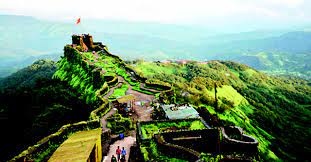

शिवनेरी किल्ला हे छत्रपती शिवाजी महाराजांचे जन्मस्थान आहे
राजगड किल्ला
राजगड किल्ल्यावर छत्रपती शिवाजी महाराज यांच्या मराठी राज्याची पहिली राजधानी होती.
तोरणा किल्ला
तोरणा हा भारताच्या महाराष्ट्र राज्यातील सह्याद्री पर्वतरांगां-
मधील डोंगरी किल्ला आहे.

प्रतापगड
महाराष्ट्राच्या आराध्य दैवत छत्रपती शिवाजी महाराजांनी इ.स १६५६ मध्ये प्रतापगड किल्ला बांधला
शिवाजी पहिला : ज्यांना छत्रपती शिवाजी महाराज असेही संबोधले जाते आणि ते भारतीय राजवटीचे सदस्य
होते. भोंसले मराठा कुळ . शिवाजीने विजापूरच्या ढासळत्या आदिलशाही सल्तनतीतून स्वतःचे स्वतंत्र राज्य
निर्माण केले ज्यामुळे मराठा साम्राज्याची उत्पत्ती झाली . 1674 मध्ये, रायगड किल्ल्यावर त्यांना औपचारिकपणे
त्यांच्या राज्याचा छत्रपती म्हणून राज्याभिषेक करण्यात आला .
आपल्या आयुष्यादरम्यान, शिवाजीने मुघल साम्राज्य ,गोलकोंडाची सल्तनत , विजापूरची सल्तनत आणि युरोपियन
वसाहतवादी शक्तींशी युती आणि शत्रुत्व दोन्ही केले . शिवाजीच्या लष्करी सैन्याने मराठा प्रभाव क्षेत्राचा
विस्तार केला, किल्ले ताब्यात घेतले आणि बांधले आणि मराठा नौदल तयार केले . शिवाजीने सुसंरचित प्रशासकीय
संघटनांसह सक्षम आणि प्रगतीशील नागरी शासन स्थापन केले. त्यांनी प्राचीन हिंदू राजकीय परंपरा, न्यायालयीन
अधिवेशने पुनरुज्जीवित केली आणि मराठी आणि संस्कृत भाषांच्या वापराला चालना दिली , कोर्टात आणि प्रशासनात
पर्शियनची जागा घेतली.
प्रारंभिक जीवन
शिवाजीचा जन्म आता पुणे जिल्ह्यातील जुन्नर शहराजवळील शिवनेरी किल्ल्यावर झाला . त्याच्या जन्मतारखेबद्दल
विद्वानांमध्ये एकमत नाही. महाराष्ट्र शासनाने 19 फेब्रुवारी ही शिवाजी जन्माची ( शिवाजी जयंती )
स्मरणार्थ सुट्टी म्हणून सूचीबद्ध केली आहे शिवाजीचे नाव स्थानिक देवता, शिवाई देवी यांच्या नावावरून
ठेवण्यात आले. शिवाजीचे वडील शहाजी भोंसले हे मराठा सेनापतीहोते ज्यांनी डेक्कन सल्तनतची सेवा केली होती .
त्यांची आई जिजाबाई ही सिंदखेड येथील लखुजी जाधवराव यांची कन्या होती, जो देवगिरीच्या सेउना राजघराण्यातीलवंशाचा
दावा करणारीमुघल-संलग्न सरदार होती .
छ.शिवाजी महाराज हे मराठा जातीतील आणि भोसले कुळातील होते. [२७] त्यांचे आजोबा मालोजी (१५५२-१५९७)
अहमदनगर सल्तनतचे एक प्रभावशाली सेनापती होते आणि त्यांना "राजा" ही उपाधी देण्यात आली होती. लष्करी खर्चासाठी
त्यांना पुणे, सुपे, चाकण आणि इंदापूरचे देशमुखी हक्क देण्यात आले. त्यांना त्यांच्या कुटुंबाच्या वास्तव्यासाठी
किल्ला शिवनेरी देखील देण्यात आला.